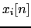
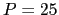
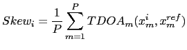

Next: GCC-PHAT Cross-Correlation Up: Meeting Information Extraction Previous: Overall Channels Weighting Factor Contents
This module was created to deal with all meetings that come from the ICSI Meeting Corpus which have a error in the synchronization of the channels. This was originally detected and reported in ICSI Meeting Recorder Project: Channel skew in ICSI-recorded meetings (2006), indicating that the hardware used for the recordings was found not to keep an exact synchronism between the different acoustic channels, having a skew between channels of multiples of 2.64ms. It is not possible to know beforehand the amount of skew of each of the channels as they did not follow a consistent ordering in their connections to the hardware being used, therefore it is needed to automatically detect such skew for it not to affect in the beamforming processing.
The artificially generated skew does not affect the general processing of the channels by an ASR system as it does not need exact time alignment between the channels (in terms of ms). It does though pose a problem when computing the delays between channels as it introduces an artificial delay between channel pairs which forces to use a bigger analysis window for the ICSI meetings than with other meetings in order to compute such delays accurately, increasing the possibility of delay estimation error and reducing the precision of such values. This module is therefore used to estimate the skew between each channel and the reference channel (in the case of ICSI meetings) and use it as a constant bias in the rest of the delay computations from then on.
In order to estimate the bias a similar technique was used as when estimating the reference channel and the weighting factor. Given signal  to compute the skew for, the cross-correlation is computed of it with the reference signal for  blocks of 20 seconds each, evenly spaced along the recording. Such segment's length has been determined in order to ensure that there is some speech within the windows being compared. The average skew is obtained for that channel by averaging the time delays of arrival (TDOA) obtained for each of the segments when their cross-correlation function is maximized. The process can be summarized in:
|  | (5.9) |
user 2008-12-08